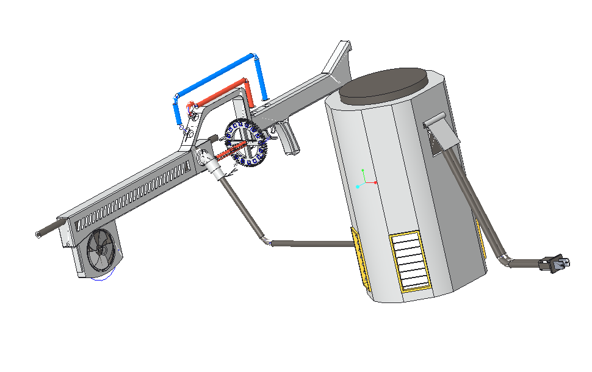
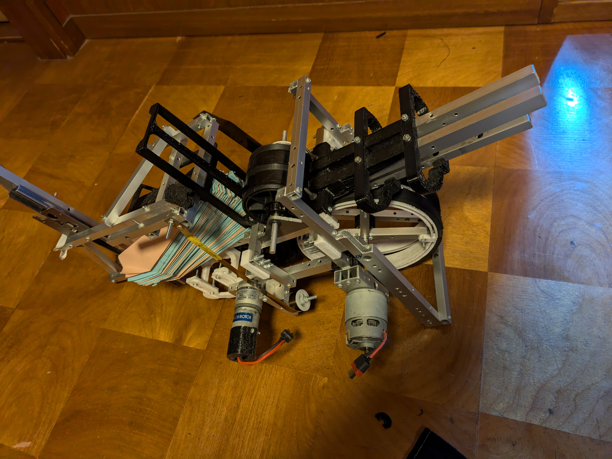
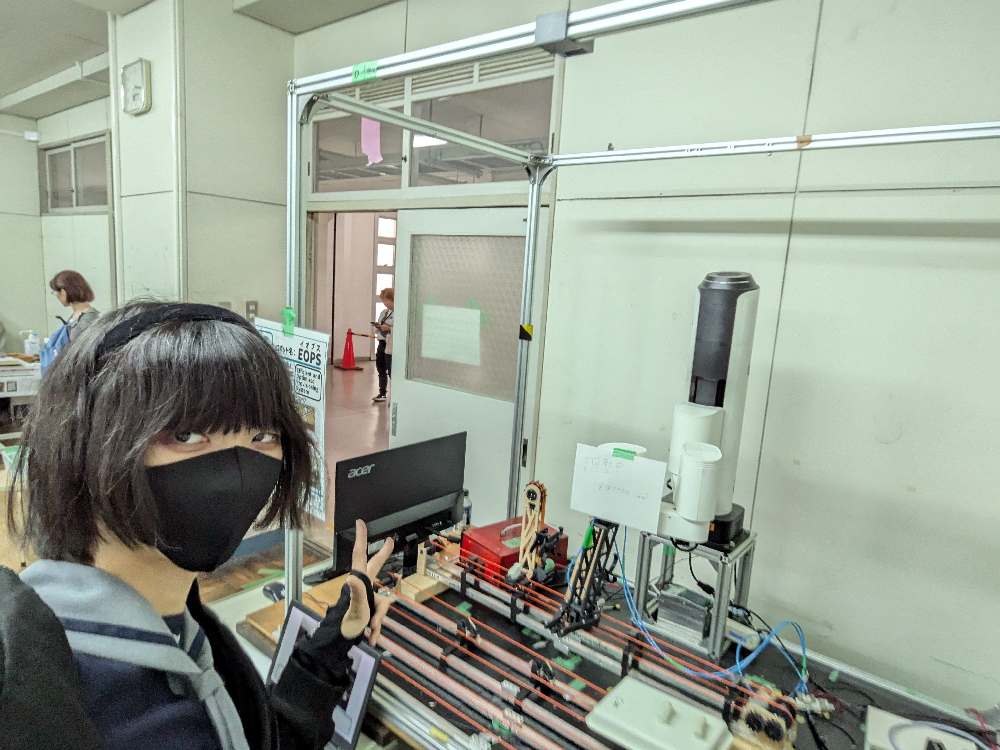
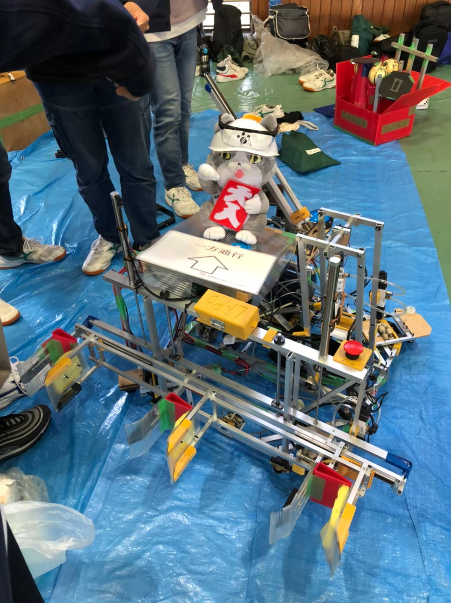
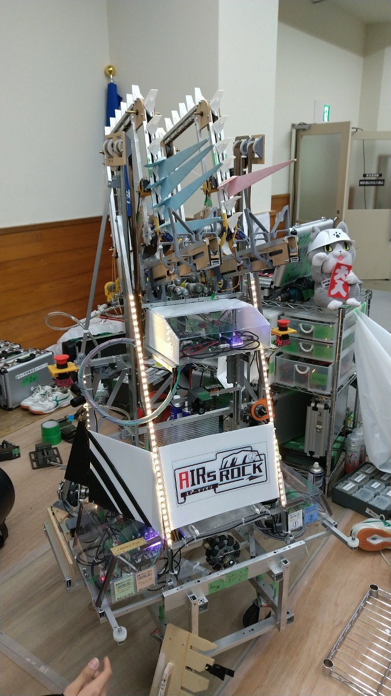
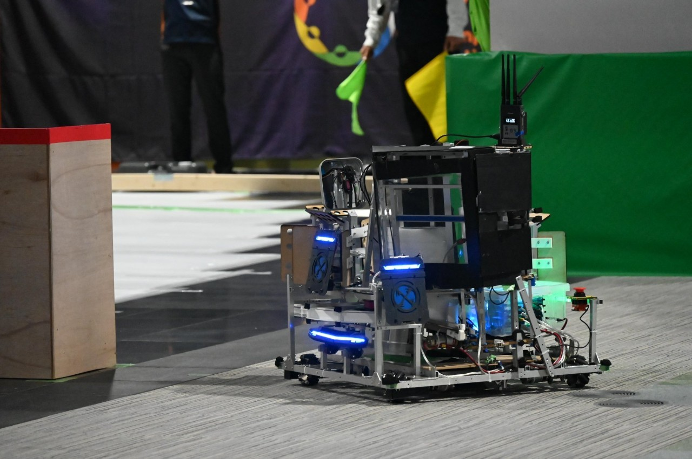
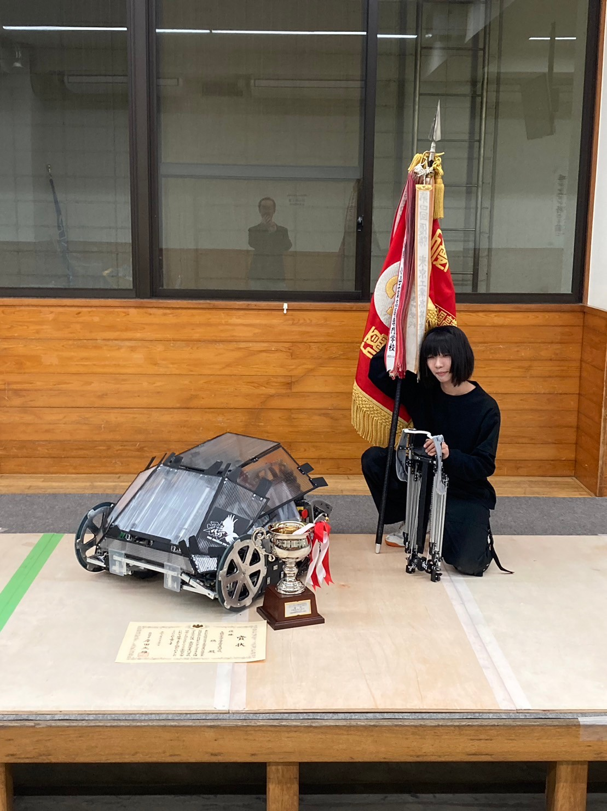
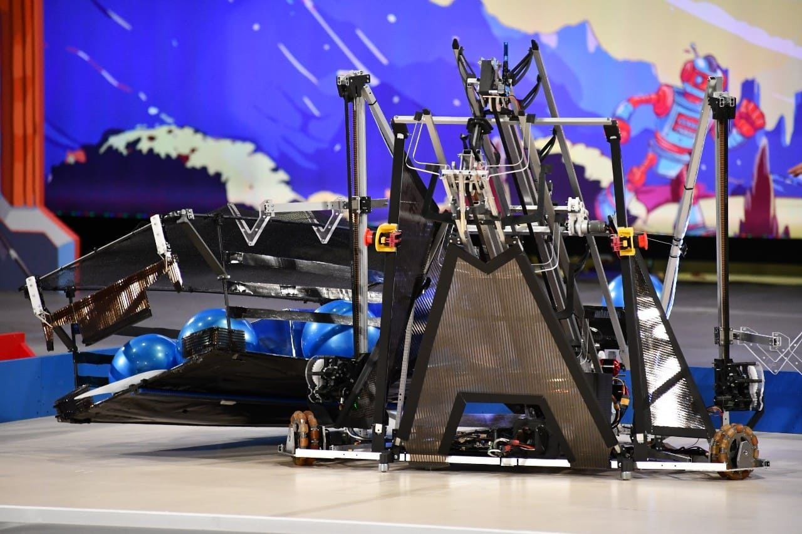

This is a portfolio of sunao_u.
About me

Skills
Programming Languages
- C++
- Arduino
- Python
- HTML
- CSS
CAD Operating
- Autodesk Fusion
- Creo Parametric
- FreeCAD
- iCAD SX
- KiCAD
- MicroCADAM
Other
- Customize 3D Printer
- Using Machine Tools (CNC, manual)
- Using microcontroller board(Arduino,ESP32,Nucleo,micro:bit)
- Building Air Pressure Circuit
- Building Electric Circuit
- PowerPoint, Excel, Word
- LibreOffice
Favorite Pursuit
- Robot Design
- Robot Control
- Robot Mechanism
- Robot Programming
- Mechanics, Dynamics
- Cooking
- Makng accessories with 3D Printer
- Building plastic models
Works
Works in class
2023
CAD designing

2023年度のCAD設計製図の授業で製作した、マイナスドライバビットの持ち手のCADデータです。
高電圧による電磁加速でマイナスドライバビットを射出するレールガンをイメージしてモデリングしました。電源ユニットから伸びるプラグや排気ファン、ダクト、リボルバー型のビットホルダーといった細かいこだわりをふんだんに盛り込んだ逸品に仕上がっています。
This is the CAD data for the handle of a flat head screwdriver bit that was created in the 2023 CAD design and drafting class.
It was modeled based on the image of a rail gun that fires flathead screwdriver bits using electromagnetic acceleration due to high voltage. It is a masterpiece that incorporates a lot of attention to detail such as the plug extending from the power supply unit, exhaust fan, duct, and revolver-shaped bit holder.
Special Research

2023年度実施の特別研究(前期分)にて設計製作した電動紙飛行機ランチャーです。
ストックされている紙飛行機を確実に一枚ずつ取り出してそれなりのスピードで連続的に射出することができます。
This is an electric paper airplane launcher designed and manufactured in the special research conducted in 2023 (first semester).
It can reliably take out one paper airplane at a time from the stock and continuously launch them at a reasonable speed.
2024
Basic Research

2024年度実施の基礎研究(前期)にて製作した自動寿司提供システム"EOPS"です。
押されたボタンに対応した寿司を自動で取り出し、自動で皿に乗せ、自動で配膳します。
制御担当でした。全ての制御はリミットスイッチで管理され、既定のシーケンスに応じて動作します。
This is the automatic sushi serving system "EOPS" created in the basic research conducted in 2024 (first semester).
It automatically takes out the sushi corresponding to the pressed button, places it on a plate, and serves it automatically.
I was in charge of control. All controls are managed by limit switches and operate according to the specified sequence.
Works in Extracurricular Activities
2022
KINKI Area Robot Contest

2022年の近畿地区合同ロボコンで製作したロボット"行くぞ!国技館"です。
足回りを除く全ての機構がエアシリンダで動作するという点が特徴でした。LiDARが搭載されており、機能としては自動操縦にも対応しています。
This is the robot "行くぞ!国技館(Let's go! Kokugikan)" created for the Kinki Area Robot Contest in 2021.
The feature was that all mechanisms except the drive system operated with air cylinders. It was equipped with LiDAR and also supported autonomous driving as a function.
KOSEN ROBOCON 2022

2022年の高専ロボコンで製作したロボット"AIRsROCK"です。
点数がそれぞれ決まっている的に紙飛行機を乗せるというルールに対して「最難関"最奥の的"のみを狙う」という尖ったアプローチを採用したロボットでした。最大で15機の紙飛行機を一試合のうちに最奥の的に入れることができ、狙撃性能に優れていました。
全国大会にてマブチモーター特別賞受賞。
This is the robot "AIRsROCK" created for the Kosen Robocon 2022.
The rule was to place paper airplanes on targets with different scores, and we adopted a sharp approach of aiming only at the "most difficult and deepest target". The robot could place up to 15 paper airplanes on the deepest target in one match, demonstrating excellent sniping performance.
It won the Mabuchi Motor Special Award at the national tournament.
2023
the Championship of Robot Engineer(CoRE)2023

2023年のCoREという大会において製作したロボット"※ひんじ卍ひんじ会のロボット"です。
複数台のロボットがフライングディスクを投げ合うという対戦競技に向けて、射程と威力と装弾数を追及して製作しました。
当時の大会で唯一床から拾ったディスクを拾って再利用するという画期的な機能を搭載していました。
拾い上げ機能が評価され、革新的技術賞を受賞。
※「ひんじ卍ひんじ会」はチーム名
This is the robot created by the team "Hinge Manji Hinge Kai" for the CoRE (the Championship of Robot Engineer) in 2023.
It was designed for a competitive game where multiple robots throw flying discs at each other, focusing on range, power, and ammunition capacity.
It was the only robot in the competition that could pick up and reuse discs from the floor, a groundbreaking feature at the time.
The pickup feature was highly evaluated, and it won the Innovative Technology Award.
KOSEN ROBOCON 2023

2023年の高専ロボコンで製作したロボット"鴉"です。
相手と共通のフィールドを周回しながら吊るされた32個のオブジェクトを回収するという競技に対して、高得点オブジェクトを迅速に回収して過半数以上の点数を相手よりも先に確保することをコンセプトとして製作しました。
私の担当した箇所は高所のオブジェクトを回収するための伸縮アーム機構で、機構そのものに1kgの重量制限が課されていながらも高い信頼性を誇っていました。
ろぼっと倶楽部初の全国優勝を達成。
試合の動画
This is the robot "鴉(Karasu)" created for the Kosen Robocon 2023.
The competition involved collecting 32 suspended objects while circling a common field with the opponent. The concept was to quickly collect high-scoring objects and secure more than half of the points before the opponent.
I was responsible for the telescopic arm mechanism to collect high objects. Despite the 1kg weight limit on the mechanism itself, it boasted high reliability.
We achieved the first national victory for the Robot Club.
Match video
2024
KANSAI SPRING ROBOCON 2024

2024年の関西春ロボコンで製作したロボット"メカヒンジ(非公認)"です。
30日という短い期間しか与えられていないにもかかわらず複雑なシステムを製作した結果見事に惨敗しました。
メカヒンジはチーム名「HIN-G」に由来。
This is the robot "Mecha Hinge (unofficial)" created for the Kansai Spring Robocon 2024.
Despite having only 30 days, we created a complex system and unfortunately lost.
Mecha Hinge is derived from the team name "HIN-G".
KOSEN ROBOCON 2024

2024年の高専ロボコンで製作したロボット"ひまり"です。プロジェクト名は"銀火"でした。
ロボットがロボットを投げ飛ばし、投げ飛ばされたロボットが作業をしてもといたエリアに帰還するというかなり過酷なルールでした。
私が担当した「ロボットを飛ばすロボット」はほかのチームで実現できたところが存在しない電動射出を実現しており、堅牢なハードウェアに仕上がっていました。
地区大会で一度敗れ、全国大会でも一度敗れながらその度に復活を遂げ、与えられたチャンスを逃すことなく勝利しました。
ろぼっと俱楽部史上初、高専ロボコン史上3校目となる2連覇達成。
試合の動画
This is the robot "Himari" created for the Kosen Robocon 2024. The project name was "銀火(Ginga)".
The rules were quite harsh, with robots throwing other robots, and the thrown robots performing tasks and returning to their original area.
The "robot that throws robots" I was in charge of achieved electric ejection, which no other team could realize, and had robust hardware.
We lost once in the regional tournament and once in the national tournament, but each time we came back and won without missing the given opportunities.
We achieved the first consecutive victory in the history of the Robot Club and the third consecutive victory in the history of Kosen Robocon.
Match video